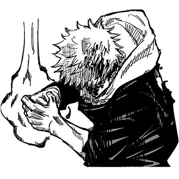
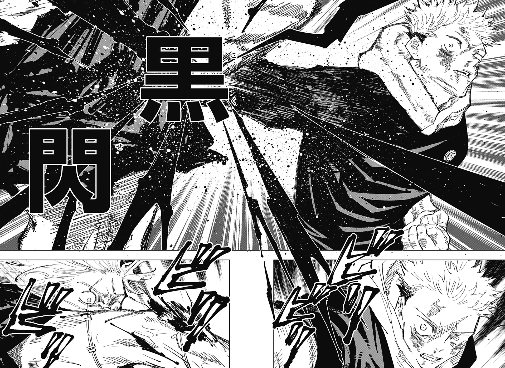
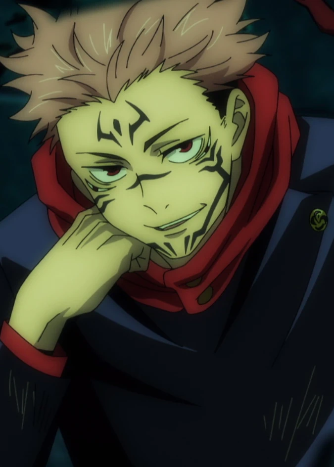

¿Quien es?
Yuji Itadori (虎杖悠仁 Itadori Yūji) es el protagonista de la serie manga Jujutsu Kaisen. Es un estudiante de primer año del Colegio Técnico de Magia Metropolitana de Tokio y recipiente del Rey de las Maldiciones, Sukuna.
Solía ser estudiante de la Escuela Secundaria Municipal Sugisawa, donde demostró poseer una increíble fuerza física pero no tenía interés alguno en los deportes. Solía pasar gran parte de su tiempo en el Club de Ocultismo. Cualquier información relacionada a sus padres es desconocida y el único familiar que estuvo a su cuidado fue su abuelo.
Cuando conoce a Megumi Fushiguro, termina arrastrado al mundo de los chamanes y maldiciones. En cierto punto de la historia, luego de ingerir uno de los dedos de Sukuna, éste encarna en él e Itadori se convierte su recipiente. A partir de entonces, Itadori tiene la misión de encontrar los restos de Sukuna que se encuentran esparcidos por todo Japón e ingerirlos, para luego ser ejecutado y destruir para siempre al Rey de las Maldiciones.
Apariencia

Vestimenta de Itadori |
Itadori es un adolescente musculoso y alto, llegando a medir 1'73 metros. En las ilustraciones del manga, su cabello es puntiagudo de marrón claro, mientras que en el anime es representado en tonos similares al rosa palo. Tiene cejas finas y grandes ojos marrones claros. Después de convertirse en recipiente para Sukuna, aparece una pequeña línea debajo de cada uno de sus ojos.
Al comienzo de la serie, Itadori vestía una chaqueta con capucha de color claro, pantalones negros con la parte inferior enrollada y zapatos blancos. Después de que se inscribiera en el Colegio Técnico de Magia Metropolitana de Tokio, comenzó a usar su versión del uniforme: en el manga, usa una camisa negra de manga larga que se asemeja a un gakuran sobre una sudadera con capucha roja, pantalones negros y zapatos rojos, mientras que en el anime, la camisa y los pantalones son representados en color azul marino.
Su vestimenta casual, tiende a consistir en sudaderas, pantalones negros y zapatos negros. No es del tipo que le guste usar sudaderas, pero las usa porque es indeciso con las prendas a utilizar.
En los recuerdos falsos ocurridos en el Capítulo 35, asistía a la secundaria con Aoi Todo y Takada-chan. Fue visto utilizando un gakuran con la parte superior abierta, revelando una sudaderas de color roja con unos pantalones negros. En otros recuerdos falsos ocurridos en el Capítulo 106, se encontraba reunido junto a Choso, Esou y Kechizu, donde fue visto utilizando una sudadera en tonos claros y unos pantalones oscuros.
Durante su busqueda por Kinji Hakari, se lo vio utilizando, una campera de color claro con puños y cuello de color oscuros.
Personalidad

Itadori siendo amigable |
Itadori es una persona honesta, amigable y le resulta bastante fácil socializar con otros durante un primer encuentro. Se preocupa mucho, no sólo por sus camaradas, sino por cualquiera que vea y tenga voluntad propia, a pesar de lo profunda o superficial que sea su conexión con ellos. Le importa mucho el "valor de una vida" y con este fin se asegurará de que otros reciban una "muerte justa". Se enoja con facilidad ante la crueldad pura y el juicio injusto de otras personas. Kento Nanami asegura que Itadori es capaz de sentir odio y dolor de otros como si fuera su dolor propio.
Uno de los rasgos que definen a Itadori es su voluntad de sacrificarse por los demás, provocada por las últimas palabras de su abuelo, donde le pide que siempre ayude a otros. Por ejemplo, cuando Megumi Fushiguro y él estaban a punto de ser asesinados por una maldición, Itadori se tragó un dedo de Sukuna para exorcizarlo y salvarlos, a pesar de que ese fue el primer encuentro con Megumi. Sostiene que no desea matar a las maldiciones, porque una vez que lo haga, siempre tendrá que recurrir al asesinato, por lo que prefiere derrotarlos y luego exorcizarlos para que reciban una muerte justa.
Durante un enfrentamiento con Aoi Todo, reveló que su tipo de chica es "una chica alta con un gran trasero, como Jennifer Lawrence". Sin embargo, se termina demostrando que es una persona demasiado descuidada en temas relacionados con el amor y no le importa realmente la apariencia de las mujeres. Reveló que durante sus días como estudiante de secundaria, solía sentirse atraído por la personalidad, naturaleza y el comportamiento de las personas.
Suele divertirse y mostrar alegría de manera seguida. Suele adaptarse rápidamente a las bromas y al humor de su maestro, Satoru Gojo además, de que tiende a dejarse llevar seguido por las ideas que éste plantea. Es bastante conocido por ser muy bromista y un maestro de las imitaciones, aunque a medias.
Siempre siguió el fuerte ideal de querer preservar la vida de otros sin importar las razones que atenten contra ésta. Durante su enfrentamiento con Mahito, en el Arco de El Incidente de Shibuya, Itadori confesó que siempre sintió la necesidad de negar el deseo de querer matar sin razón, algo que describía perfectamente a Mahito. Sin embargo, al finalizar su batalla, le revela a Mahito que ya no necesita una razón específica para asesinar.
Tras observar la masacre que Sukuna llevó a cabo mientras tenía el control de su cuerpo, sumado a un montón de recuerdos vagos de las personas que asesinó y tras haber presenciado distintos sucesos trágicos en Shibuya, Itadori siente una gran culpa por todo lo sucedido dado que de cierta forma él fue responsable y se ha vuelto más deprimido y serio, quedando con un fuerte trauma por las muertes que ha presenciado, a pesar de esto, lucha para mantenerse con vida y toma la responsabilidad de resolver todo por su cuenta.
Habilidades
| Habilidad | Descripción | Imagen |
|---|---|---|
| Puño Divergente | Después de que Itadori golpea a un objetivo, su energía maldita fluye y realiza un segundo impacto. Esta técnica surge como resultado de que Itadori no fuera capaz de sincronizar su energía con su fuerza física. |  |
| Destello Oscuro | Una técnica que todo chamán es capaz de usar, pero hasta ahora, ningún chamán es capaz de usarlo a voluntad. Cuando un chamán hace un impacto con poder maldito dentro del lapso de .000001 segundos del golpe físico, el espacio se distorsiona y el poder maldito destella de color negro. |  |
| Contrato Vinculante: Contrato con Partes Beneficiadas | Es un contrato creado a través del uso de
energía maldita realizado entre Itadori y
Sukuna. El contrato sigue como condición:
|
 |
Imagenes de Itadori

Apariencia de Itadori (Anime) |

Apariencia de Itadori (Manga) |

Itadori preparandose para una pelea en el manga |

Itadori usando su energía maldita |

Itadori usando Destello Negro contra Hanami |

Itadori libreando su energía maldita |
Curiosidades
- Según información revelada en el Volumen 01 del manga:
- Mide 1.73 metros de alto, y de acuerdo con Gege Akutami, continuará creciendo.
- Pesa cerca de 80kg, pero el porcentaje de grasa corporal es de un solo dígito.
- Adora ver la televisión.
- Es un maestro de las imitaciones, aunque a medias.
- No es quisquilloso con la comida (puesto que fue capaz de comer un dedo de Sukuna).
- No es del tipo que le guste usar sudaderas, pero las usa porque es indeciso con las prendas a utilizar.
- Durante el Arco de El Incidente de Shibuya, en medio de su batalla contra Choso y otra contra Mahito, terminó obteniendo dos cicatrices entre sus cejas. La cicatriz más delgada fue realizada por Choso con su Técnica de Manipulación de Sangre y la cicatriz grande, la realizó Mahito cuando transformó parte de su brazo en un cuchillo.
- En la primera entrevista pública de Gege Akutami, este reveló que si la serialización no iba bien, tenía planeado no revivir a Yuji después de que Sukuna le arrancase el corazón, además agregó que Yuji no es el tipo de personaje con el que él se llevaría bien.
- Según información revelada en el Volumen 01 del manga:
- Tiene 15 años de edad.
- Su cumpleaños es el 20 de marzo.
- Nació en Miyagi.
- Su método de inscripción al Colegio de Tokio fue por reclutamiento.
- No tiene ninguna técnica maldita.
- Es hábil con el Puño Divergente, y ha experimentado el Destello Oscuro.
- Su pasatiempo y habilidad especial recae en el karaoke, mirar TV y en la imitación.
- Su comida favorita es un tazón de arroz con comida encima, y los fideos.
- No tiene una comida que le disguste.
- Su causa de estrés es la asignatura de ciencias (fallo con el mol).
- Su tipo favorito es Jennifer Lawrence (una chica alta con gran trasero).
- Información revelada de la entrevista con Gege Akutami:
- Akutami le puso el nombre Itadori que proviene de una hierba medicinal, y Yuji fue escogido aleatoriamente de uno de sus compañeros de clase, dado que Akutami quería que fuera lo más realista posible.
- Su cabello no es teñido, es su color natural.
- Yuji y Sukuna no hablan usualmente dado que no se llevan bien. Pese a que Sukuna le habla constantemente a Yuji, este es capaz de dormir sin ningún problema, inclusive podría dormir en el asfalto de la autopista Tokyo-Nagoya.
- Durante su entrenamiento viendo películas, algunos de los títulos que vio fueron: El perfecto asesino, El descenso, El huésped, El ejército desnudo del emperador sigue marchando. Y el spoiler que le dio Satoru Gojo, fue de la película Alerta en lo profundo.
- Yuji nunca podría perdonar la abrumadora maldad enfermiza.
- Antes solía tener mucho contacto con sus amigos de Miyagi, pero no tenía un celular hasta que comenzó a asistir al colegio jujutsu por lo que perdió todo contacto con ellos.
- Si nunca hubiera estado en contacto con el mundo del jujutsu probablemente se hubiera convertido en un bombero.
- Se interesó por Jennifer Lawrence cuando vio la película El lado luminoso de la vida.
- Yuji es el tipo de estudiante que hace la tarea un día antes de entregarla. Es del tipo que la hace tarde pero que la entrega en la fecha estipulada.
- Si Aoi Todo y Yuji no se hubieran conocido como chamanes, pero sí como compañeros de escuela, probablemente ambos hubieran encontrado en el otro algo que les agrade y se hubieran vuelto amigos.
- Los pensamientos de Yuji cuando Yuko Ozawa le pidió una foto en la ceremonia de graduación fueron "Claro, una foto ¿verdad? Recibido".
- Akutami tiene el hábito de dibujar a Yuji con sudaderas, es por ello que siempre viste muchas.
- No es que Akutami odie a Yuji, es solo que le cuesta manejarlo.
- En el capítulo 143, se puede ver un flashback sobre el padre y madre de Itadori Yuji, la cual esta última está siendo poseída por Kenjaku.